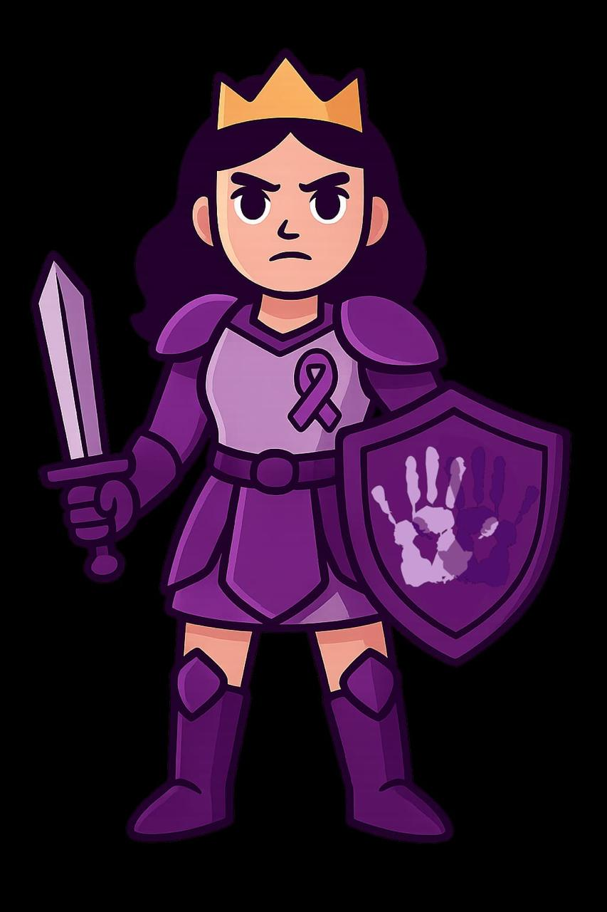

Página em Construção
Estamos trabalhando para trazer essa funcionalidade o mais rápido possível. Agradecemos sua paciência e interesse em apoiar nossa causa!

Estamos trabalhando para trazer essa funcionalidade o mais rápido possível. Agradecemos sua paciência e interesse em apoiar nossa causa!